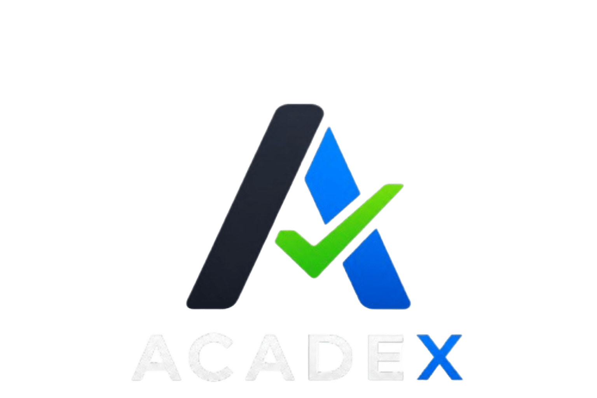

Portafolio
Mis Proyectos
Aplicaciones web funcionales desarrolladas con bases de datos y lógica de negocio real.

Proyecto Piolín (Inventario & E-commerce)
Sistema full stack con panel administrativo, control de stock, gestión de usuarios, carrito de compras y pasarela simulada.

Acadex (Gestión Académica)
Plataforma para la gestión de tareas académicas. Desarrollado con arquitectura moderna, integrando frontend reactivo y backend robusto.